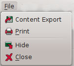
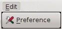
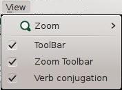
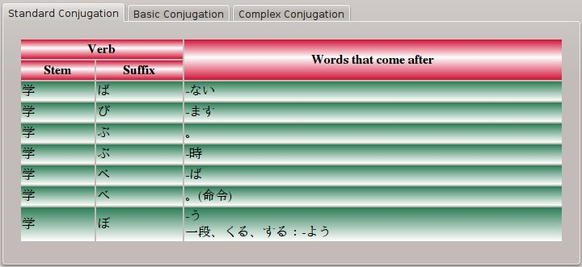
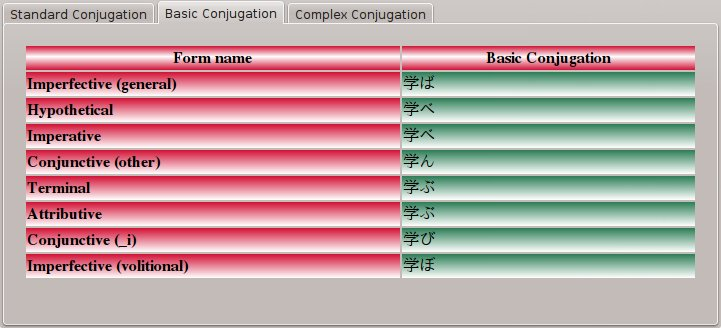
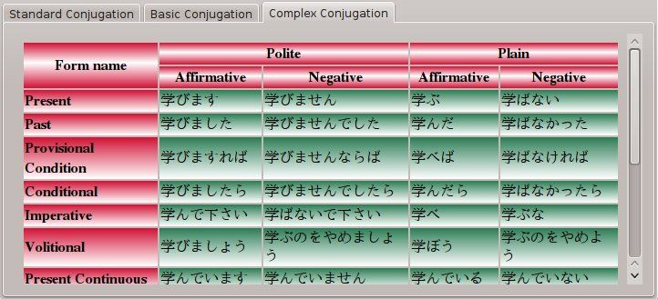

This application afford an easy to use user-interface. It is designed to help the user conjugating Japanese verbs and do other stuff in an easy way. The application contains five parts:
Also, the user interface is translated to languages other than English: Arabic, French, Japanese.
It contains functionalities specific for data such as printing or exporting result tables.

It contains editing functionalities, such as preferences.

It contains functionalities specific for application presentation such as Zoom, and showed bars and panels.

It contains this help and information about the application.
Tool Bars are used to easily access functions, which are located in the menu bar.
Here you can input the Japanese verb that you want to conjugate. The input verb must achieve some conditions:
The application gives you information about the input verb.
If the verb doesn't exist in the database, it will show you a message saying so.
Otherwise, it shows you the verb's type.
This is a list of most important verb types:
The result contains three tables:
It is used by Japanese to learn verb conjugation.

It shows the basic stems: a e u i o plus t-form.

It shows some complex forms, which are originated using basic stems and suffixes.
